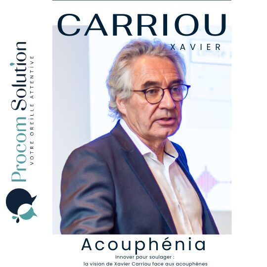

Audrey donne la parole aux professionnels du secteur — audioprothésistes, ORL, chercheurs — pour décrypter l'audiologie au grand public.

Fondateur d'Acouphénia "J'invente le futur". Xavier CARRIOU vous a personnellement amené à vous spécialiser dans la prise en charge des acouphènes.
Lire l'article →Chaque bruit, même le plus léger, devient une lame de rasoir qui s'enfonce dans ma tête. J'ai dû apprendre.
Lire l'article →L'audioprothésiste qui casse les codes. "Je ne suis pas tombé dans l'audiologie par hasard, mais presque." Azdine Ezzahti, Monsieur Ezzahti, votre parcours est riche et...
Lire l'article →Un homme de vision. "Je n'avais qu'à m'inscrire dans tous les trous." Jean-Pierre Bébéar fut mon guide. Le Pr Vincent Darrouzet, Professeur Darrouzet, merci de...
Lire l'article →Un portrait exclusif du Docteur Arnaud Deveze, spécialiste reconnu dans le domaine ORL et la chirurgie de l'oreille.
Lire l'article →Un portrait du Professeur Yann Nguyen, figure incontournable de l'implantologie cochléaire en France.
Lire l'article →Un lien méconnu entre surdité cachée et acouphènes décrypté simplement pour les patients et professionnels.
Lire l'article →Rassure toi, l'otite n'est pas contagieuse. Mais attention, l'infection qui l'a provoquée peut l'être. Il existe trois types d'otites différents.
Lire l'article →Tout savoir sur la presbyacousie, cette perte auditive liée à l'âge qui touche un senior sur trois. Symptômes, causes et solutions.
Lire l'article →Décryptage d'une refonte complète d'un compte Instagram audiologie : stratégie visuelle, cohérence de marque et résultats.
Lire l'article →7 astuces concrètes pour booster ta visibilité en ligne en tant que professionnel de l'audiologie. Applicables dès aujourd'hui.
Lire l'article →Comment choisir la bonne palette de couleurs pour votre identité visuelle en audiologie. Les codes couleur qui inspirent confiance.
Lire l'article →